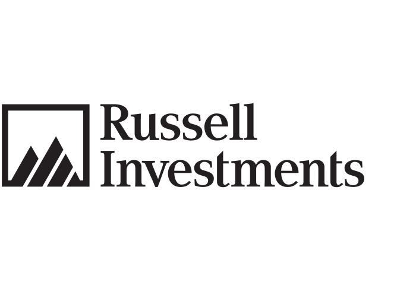
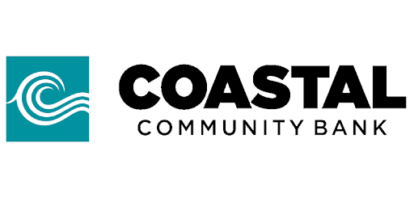

|
Tubal Theodros
I am a graduate student at UC Berkeley pursuing a Master of Information Management and Systems degree with a focus on Data Science and Machine Learning. I am also a graduate of the University of Washington - Seattle with an Interdisplinary Honors Degree in Informatics. Throughout my career I have been passionate about leveraging data to drive strategic innovation and informed decision-making. My technical expertise includes Python, SQL, and data visualization tools such as Power BI and Tableau, which I use to transform complex datasets into actionable insights.
I excel at designing impactful solutions that align with organizational goals, enhance operational efficiency, and support long-term growth. My ability to thrive in collaborative environments and deliver data-driven results has consistently shaped strategic directions and fostered success in the projects I’ve undertaken. Below, you’ll find my professional experiences, personal projects, and key achievements that highlight the skills and values I bring to every opportunity.
Email /
CV /
GitHub /
LinkedIn /
Berkeley iSchool
|
|
Work Experience
My work experience spans internships across various sectors within the financial services industry, where I have focused on leveraging data science and analysis techniques to analyze complex datasets, uncover trends, and provide actionable insights.
|
|
|
Balyasny Asset Management (Summer 2025)
People Analytics Intern - New York, NY
TBD
|
|

|
Russell Investments (Summer 2023)
Marketing & Data Analytics Intern - Seattle, WA
Leveraged SQL and data visualization tools to analyze digital channels, uncovering customer trends that boosted engagement, and conducted ESG data analysis using Excel, Alteryx, and PowerBI to create dashboards benchmarking the firm against competitors and identifying areas for improvement.
|

|
Coastal Community Bank (Summer 2021)
Data Science Intern - Everett, WA
Utalized SQL to analyze historical customer data, uncovering trends and crafting impactful Power BI visualizations that highlighted pain points across 100+ companies, providing actionable insights to inform strategic business decisions.
|
Research Experience
From June 2022 to July 2023, I participated in the iSchool Inclusion Institute (i3) at the University of Texas at Austin, a prestigious program focused on increasing diversity and inclusion in the information sciences. During the Introductory Institute, I engaged in workshops highlighting key specialties in information sciences, professional development sessions led by industry experts, and research design modules. I collaborated with mentors and teammates to design a yearlong research project while gaining hands-on experience with computational tools and collaborative technologies. The program emphasized interdisciplinary collaboration and innovative problem-solving, laying the foundation for a meaningful research project addressing real-world challenges.
|
|
|
Online Privacy Concerns and the Teenage Perspective
Tubal Theodros, Aadit Gupta, Tomas Russo
Proposal,
Poster,
Presentation,
Certificate of Completion
The project focused on creating a privacy scale tailored to teens’ social media usage, addressing gaps in adult-focused privacy measures. We collected data from teens to reflect their specific social media privacy concerns. Our work culminated in presenting findings at the 2023 iConference.
|
Personal Projects
Relevant Coursework
During my Master’s program at UC Berkeley (MIMS) and my undergraduate Informatics degree at the University of Washington, I have taken a variety of courses that have shaped my technical skills, passions, and career aspirations. Below is a selection of these courses, categorized by institution.
University of California - Berkeley
University of Washington - Seattle
|
|